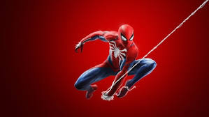
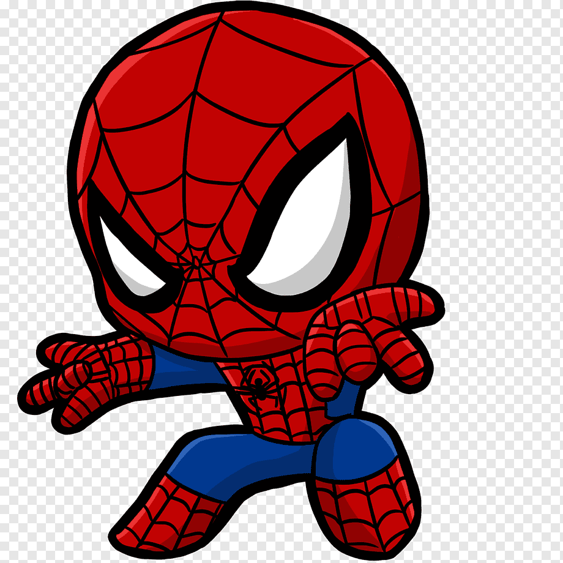
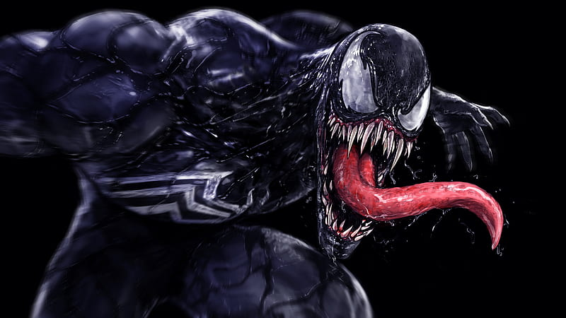
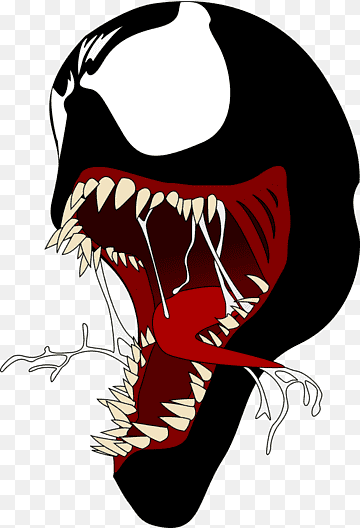

El increíble, Spiderman
Spider-Man es un personaje de Marvel Comics creado por Stan Lee y Steve Ditko. Aparece por primera vez en la tira cómica Fantasía increíble en agosto de 1962.
Ver más

El hermoso Capitan America
Capitán América (nombre real Steven Grant "Steve" Rogers) es un superhéroe de Marvel Comics que hizo su debut en el Universo Cinematográfico de Marvel en la película de Marvel de 2011, Captain America: The First Avenger.
Ver más


Venoso
Un simbionte Asexual que requiere de adherirse a un huésped para sobrevivir, por lo menos en la película . Aún así en comics puede ir con total libertad pero son mucho más débiles que compartiendo cuerpo.
Ver más